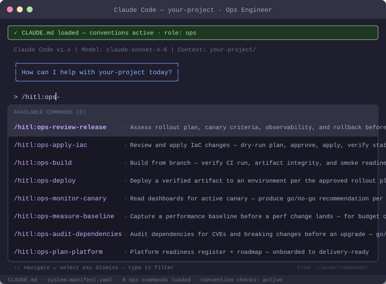

Five kinds of building blocks compose into every workflow on this site. None of them is exotic on its own; the system property comes from how they interlock — instructions that anyone can read, enforcement that nobody can skip, and memory that outlives every session.
Three different hands operate the system, and knowing which is which explains most of the architecture.
Humans invoke skills as slash commands (/hitl:ops-deploy), hold the approval gates, and make every promote, hold, and rollback call. Some catalog steps are marked manual: they are yours entirely.
Claude executes skill instructions, routes a change to the right next skill, drafts every document and test, and runs the reviewer agents. Steps marked guided mean Claude follows a reference doc without a dedicated skill.
Hooks fire on events — session start, every prompt, before and after every file edit — not on anyone's judgment. Neither the human nor the AI can forget to run them. This is the lane that makes the process enforced.
The single machine-readable definition of every workflow: which steps exist, in what order, which command executes each, and which role owns it. Everything else renders or enforces this one file.
shared/workflows.yamlStep-by-step instruction sets for one job each: onboard a codebase, plan tests, review a release, deploy. Exposed as /hitl:* commands; Claude executes them, humans invoke them and hold their gates.
Small deterministic scripts the harness runs on events: block edits without an active change, check domain boundaries, render progress, write session summaries. The deploy gate script fails closed on anything it cannot verify.
check-hitl-context.sh · check-platform-ready.shIndependent reviewer personas that run in a separate context from the work they judge — an architect reviewing a design cannot be biased by the conversation that produced it.
architect-reviewer · spec-conformance-reviewerThe molds for every artifact the process produces: PRD, decision packet, ADRs, the four registries, the readiness register. A template is a contract — the deploy gate literally validates registers against it.
platform-readiness-template.yamlWhat the pillars produce and consume: the conventions contract, system manifest, design docs, decision records, and registries for tests, incidents, token costs, and platform readiness. Every session loads it; no session starts from zero.
CLAUDE.md · system-manifest.yaml · 4 registries
Every step in every workflow executes the same way. This is the whole trick — one repeating composition, not fifty special cases.
deploy · Ship · ops-deploy · Ops.
manual are done by a person; guided steps follow a reference doc.
/hitl:ops-deploy productiondeploy as a Ship-phase step owned by Ops, executed by the ops-deploy command.check-platform-ready.sh — that validates the readiness register (built from a TEMPLATE) deterministically. Unknown status? Incomplete waiver? Truncated file? It exits blocked. The skill is instructed to stop and never offer a bypass.The design rule underneath all of it: anything that must never be skipped is a hook, not an instruction. Anything that requires judgment is a skill with a human gate, not automation. Anything worth remembering is written to durable memory, not left in a conversation. That division of labor — deterministic enforcement, instructed intelligence, recorded truth — is what makes an AI-native process trustworthy at scale.